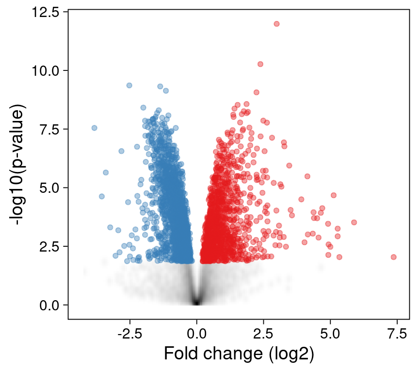

library(fs)
library(ggplot2)
library(ggrastr)
library(poorman)
library(readxl)
ggplot2::theme_set(theme_linedraw(base_size = 14))tl;dr
volcano plots are a staple of genomics papers. The ggrastr::geom_point_rast() function enables collaborators to post-process plots in inkscape or Adobe illustrator - without overwhelming the application with tens of thousands of individual points.
Introduction
As a scientific collaborator, I often contribute visualizations of high throughput experiments to publications. Try as I might, the final touches of a complex figure usually need to be added manually, e.g. using a vector graphics application like inkscape or Adobe Illustrator.
Unfortunately, a plot with tens of thousands of points exported from R as a PDF is hard for my collaborators to edit, as these applications struggle to render all of the individual points.
Luckily, I can modify my plots to make their life easier.
Example data from Mattila et al, 2015
Let’s retrieve a table with the results from a differential gene expression analysis by downloading an excel file published as supplementary table S2 by Mattila et al, 2015
df <- local({
kUrl <- paste0(
"https://drive.google.com/uc?export=download&",
"id=1xWVyoSSrs4hoqf5zVRgGhZPRjNY_fx_7"
)
temp_file <- tempfile(fileext = ".xlsx")
download.file(kUrl, temp_file)
readxl::read_excel(temp_file, sheet = "mlx1 mutant LSD vs. HSD", skip = 3)
})The authors compared the transcriptomes of Drosophila melanogaster (fruifly) larvae carrying mutant form of the Mlx1 gene that were raised either on a high- or low-suger diet. The results of their analysis (with the limma Bioconductor package ) revealed numerous significantly differentially expressed genes (adjusted p-value < 0.05).
Let’s visualize their results with a volcano plot! 1
To highlight statistically significant differences in expression, let’s add the direction column, labeling up- and down-regulated genes that pass an adjusted p-value threshold of 0.05
kFdr <- 0.05
df$direction <- with(df, poorman::case_when(
logFC > 0 & adj.P.Val < kFdr ~ "up",
logFC < 0 & adj.P.Val < kFdr ~ "down",
TRUE ~ "n.s."
))
df$direction = factor(df$direction, levels = c("down", "up", "n.s."))
table(df$direction)
down up n.s.
1869 1181 7966 A first volcano plot
Let’s plot the full dataset, and highlight significantly up- and down-regulated genes in red and blue, respectively.
p1 <- ggplot() +
geom_point(data = df,
aes(x = logFC, y = -log10(P.Value), color = direction),
alpha = 0.4) +
scale_color_manual(values = c("up" = "#E41A1C",
"down" = "#377EB8",
"n.s." = "lightgrey"),
guide = "none") +
labs(
x = "Fold change (log2)",
y = "-log10(p-value)"
) +
theme(panel.grid = element_blank())
print(p1)Not too bad! We might want to label a few genes (e.g. with the ggrepel R package ), but this is a great start.
Unfortunately, when I save this plot as a PDF file and share it with my collaborators, they let me know that they have trouble editing the axis labels in Adobe Illustrator - there are simply too many individual points to render!
Let’s see what we can do to help.
Summarizing points as densities
In most datasets, including this one, only a small fraction of features is of interest. E.g. 7966 genes are not differentially expressed and are plotted in grey. (Because there are so many genes, they are plotted on top of each other.)
Instead of plotting all of these points individually, we can summarize them as a 2D density instead:
p2 <- ggplot() +
stat_density2d(
data = poorman::filter(df, adj.P.Val >= kFdr),
aes(x = logFC, y = -log10(P.Value), fill = after_stat(density ^0.5)),
geom = "tile", contour = FALSE, n = 200) +
scale_fill_gradient2(low = "white", high = "black", guide = "none") +
geom_point(data = poorman::filter(df, adj.P.Val < kFdr),
aes(x = logFC, y = -log10(P.Value),
color = direction),
alpha = 0.4) +
scale_color_manual(values = c("up" = "#E41A1C",
"down" = "#377EB8",
"n.s." = "lightgrey"),
guide = "none") +
labs(
x = "Fold change (log2)",
y = "-log10(p-value)"
) +
theme(panel.grid = element_blank())
print(p2)
This reduces the number of points dramatically, as only the 3050 significantly changed (e.g. red and blue) points need to be plotted individually.
Can we do even better?
Rastering points
The ggrastr R package allows us to raster our ggplot - either specific layers or the entire plot. Instead of plotting every point (often on top of other points), a rasterized image records the intensity of its pixels.
The ggrastr::geom_point_rast() function is a drop-in replacement for ggplot2::geom_point().
The results are indistinguishable from our first plot. But the underlying layer is now rasterized: the points cannot be edited individually in a vector graphics application, as they are now encoded as a single image.
p3 <- ggplot() +
ggrastr::geom_point_rast(data = df,
aes(x = logFC, y = -log10(P.Value), color = direction),
alpha = 0.4) +
scale_color_manual(values = c("up" = "#E41A1C",
"down" = "#377EB8",
"n.s." = "lightgrey"),
guide = "none") +
labs(
x = "Fold change (log2)",
y = "-log10(p-value)"
) +
theme(panel.grid = element_blank())
print(p3)In addition to making our collaborators’ lifes easier, the rasterized files are also slightly smaller than the original vectorized versions:
vectorized <- file.path(tempdir(), "vectorized.pdf")
ggsave(plot = p1, filename = vectorized, width = 4.5, height = 4)
rasterized <- file.path(tempdir(), "rasterized.pdf")
ggsave(plot = p3, filename = rasterized, width = 4.5, height = 4)
fs::dir_info(tempdir()) |>
poorman::filter(grepl("vectorized|rasterized", path)) |>
poorman::select(path, size) |>
poorman::mutate(path = basename(path))# A tibble: 2 × 2
path size
<chr> <fs::bytes>
1 rasterized.pdf 339K
2 vectorized.pdf 550KReproducibility
Session Information
sessioninfo::session_info("attached")─ Session info ───────────────────────────────────────────────────────────────
setting value
version R version 4.3.2 (2023-10-31)
os Debian GNU/Linux 12 (bookworm)
system x86_64, linux-gnu
ui X11
language (EN)
collate en_US.UTF-8
ctype en_US.UTF-8
tz America/Los_Angeles
date 2024-04-03
pandoc 3.1.1 @ /usr/lib/rstudio/resources/app/bin/quarto/bin/tools/ (via rmarkdown)
─ Packages ───────────────────────────────────────────────────────────────────
! package * version date (UTC) lib source
P fs * 1.6.3 2023-07-20 [?] CRAN (R 4.3.1)
P ggplot2 * 3.4.3 2023-08-14 [?] CRAN (R 4.3.1)
P ggrastr * 1.0.2 2023-06-01 [?] CRAN (R 4.3.1)
P poorman * 0.2.7 2023-10-30 [?] RSPM
P readxl * 1.4.3 2023-07-06 [?] CRAN (R 4.3.1)
[1] /home/sandmann/repositories/blog/renv/library/R-4.3/x86_64-pc-linux-gnu
[2] /home/sandmann/.cache/R/renv/sandbox/R-4.3/x86_64-pc-linux-gnu/9a444a72
P ── Loaded and on-disk path mismatch.
──────────────────────────────────────────────────────────────────────────────
This work is licensed under a Creative Commons Attribution 4.0 International License.
Footnotes
The limma package includes the
limma::volcanoplot()function, which creates a volcano plot using base R. Here, I am generating custom plots withggplot2instead.↩︎